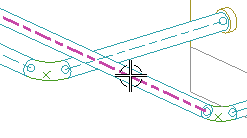
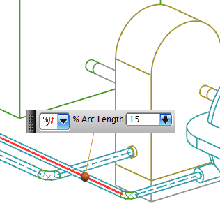
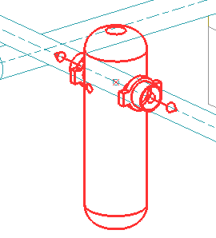
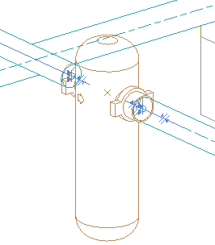

插入串联的过滤器
您将在管线段中串联进一个过滤器。
-
在机械管线布置工具条上的部件下拉菜单中，选择放置部件
 。
。 -
在选择现有部件组中，点击打开
 。
。 -
双击 rtg1_filter_q。
注释
如果您需要在 Teamcenter 中搜索部件，可以在搜索组的搜索框中键入 filter_q 然后回车。
-
在指定项对话框中，点击确定。
-
在位置组中，点击点对话框
 。
。
-
在类型列表中选择点在曲线/边上。
-
在如图所示的线段上选择任意一个点。

-
在曲线上的位置组中，设置下列参数值：
位置
=
弧长百分比
弧长百分比
=
15
提示
您也可以将橙色参考点拖动至15，或者在屏显输入框中键入15。

-
回车。
-
点击确定。
-
在部件选项组中，确认下列设置：
组件名
= rtg1_filter_q
引用集
= PORT
图层选项
= 原始的
-
在放置解算方案组中，点击下一个解算方案
 ，直到过滤器的锚点与您选择的管线控制点重合，并且该单元垂直向下。
，直到过滤器的锚点与您选择的管线控制点重合，并且该单元垂直向下。
-
点击确定以放置部件。
过滤器将被放置在管线上，并且将型材修剪至过滤器上的端口处。

-
关闭所有部件。